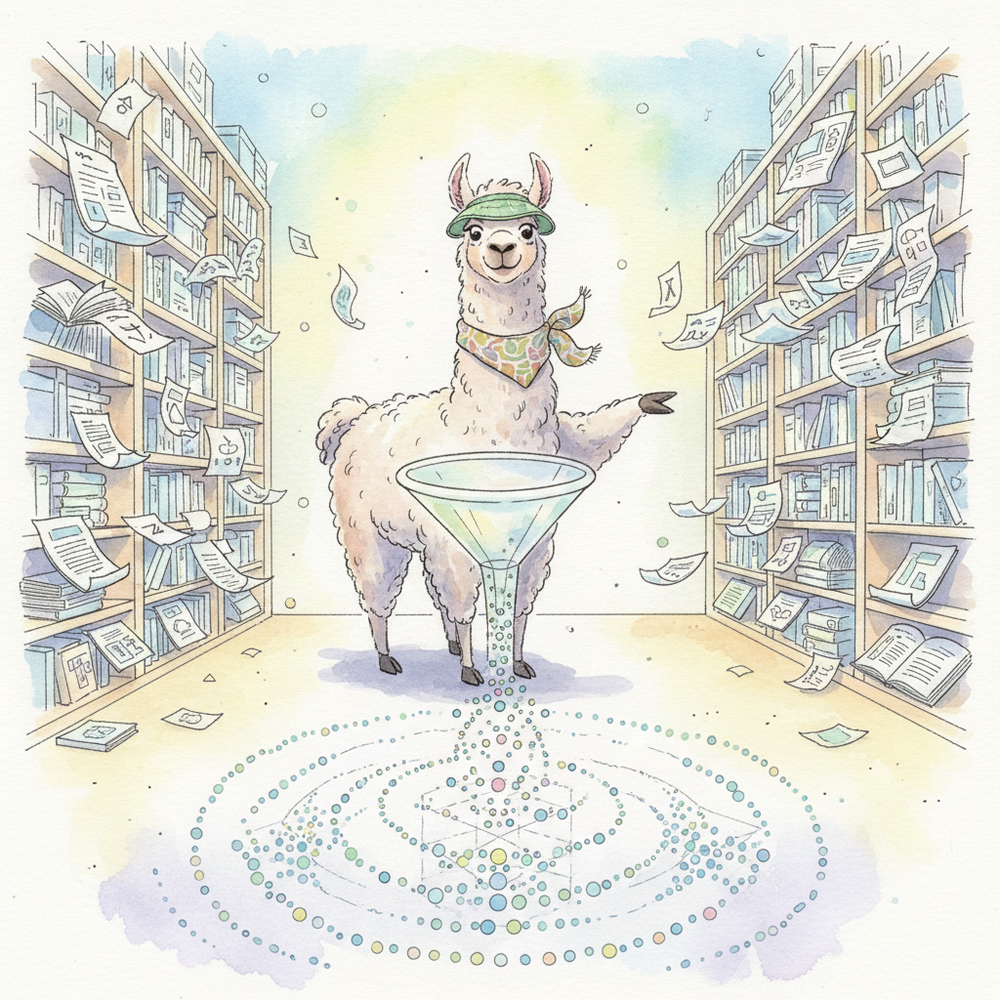

LlamaIndex: Data Indexing and Query Engines (formerly GPT Index) is a data framework purpose-built for connecting LLMs to external data sources. While other orchestration frameworks treat retrieval as one capability among many, LlamaIndex: Data Indexing and Query Engines makes indexing and querying its core focus. It provides over 300 data connectors (via LlamaHub), multiple index types (vector, list, tree, keyword, knowledge graph), and sophisticated query engines that handle response synthesis, sub-question decomposition, and routing.
The framework's architecture separates ingestion (loading, chunking, embedding) from querying (retrieval, reranking, synthesis), giving you fine-grained control over each stage. LlamaIndex: Data Indexing and Query Engines v0.11+ reorganized into llama-index-core with modular integration packages, improved streaming support, and introduced Workflows for event-driven orchestration. The PropertyGraph index and agent tooling bridge the gap between pure retrieval and agentic applications.
This appendix serves developers building RAG systems, document Q&A applications, knowledge bases, and any product that needs to ground LLM responses in private or domain-specific data. If retrieval quality is your primary concern, LlamaIndex: Data Indexing and Query Engines offers deeper indexing primitives than general-purpose orchestration frameworks.
LlamaIndex: Data Indexing and Query Engines implements the retrieval-augmented generation patterns covered in Chapter 20 (RAG) and relies on the embedding and vector database concepts from Chapter 19 (Embeddings and Vector Databases). For the LLM API layer that powers query engines, see Chapter 10. To compare LlamaIndex: Data Indexing and Query Engines with other orchestration options, consult Appendix V (Tooling Ecosystem).
Work through Chapter 19 (Embeddings and Vector Databases) to understand embedding models, similarity search, and vector store architecture. Chapter 20 (RAG) covers the retrieval pipeline design that LlamaIndex: Data Indexing and Query Engines implements. You should have a working API key for an LLM provider and basic comfort with Python.
Choose LlamaIndex: Data Indexing and Query Engines when retrieval quality and data ingestion are the hardest parts of your problem. It excels at multi-document Q&A, structured data querying (SQL, Pandas), knowledge graph construction, and any RAG pipeline where you need to experiment with chunking strategies, index types, or reranking. If you need broader orchestration (chains, memory, agents) with retrieval as one component, Appendix L (LangChain) may be a better starting point. For agentic workflows that use retrieval as a tool, see Appendix M (LangGraph).